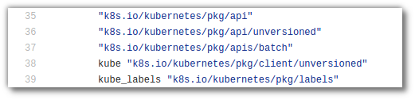

Notes on launching kubernetes jobs from the Go API
This post is also published on medium
My current work at pharmb.io entails adding kubernetes support to my light-weight Go-based scientific workflow engine, scipipe (kubernetes, or k8s for short, is Google’s open source project for orchestrating container based compute clusters), which should take scipipe from a simple “run it on your laptop” workflow system with HPC support still in the work, to something that can power scientific workflows on any set of networked computers that can run kubernetes, which is quite a few (AWS, GCE, Azure, your Raspberry Phi cluster etc etc).
As scipipe is itself written in Go it seemed natural to go with the officially supported programmatic Go API to kubernetes. This turned out to be less than a smooth ride though, at least to start with. Thus, I thought it worthwhile to jot down a few of the observations I did as a complete newcomer to kubernetes and this style of writing programming APIs, in the hopes that it might help some other newcomer, and maybe give kubernetes developers a few hints on where to focus efforts in documenting the API.
Documentation — or not
The first thing I noted, when looking for documentation for the programmatic access to the API, is that there wasn’t much, except for a minimal section in the user guide , and two possibly even more minimal code examples . None of those showed specifically how to work with the (batch) jobs API though, so I was still left in the dark in that regard.
I also, somewhere down the line found the code file where most of the API types for the batch job API were defined . But since the types were all spread out, and depending on each other in very complex ways, without a clear starting point, it was not too helpful for a newcomer.
A few guiding words on the principles, or how to find stuff, would have helped tons here.
Well, finally, by surfing around lots and lots, I stumbled upon the API conventions document , which in fact gives a few hints about the thinking behind the API structure. That helped to get some kind of idea of the thinking behind the API (link this document more prominently maybe?).
And, what finally made me get forward, was when I found an example of a 3rd party library that created kubernetes jobs, in the code of Pachyderm (Pachyderm is cool cool stuff, but more on that in another post perhaps).
I was still heavy scared by stuff like these import statements:

Heeya! … I mean, which one do I even start with, to look for … some kind of starting point or something?
When it clicked
Well, following the pachyderm code example, and working backwards, jumping to the definitions of each type or function returning a type, a pattern finally started to emerge.
So, it turns out, that complex struct types such as Job, JobSpec,
ImageSpec etc, are simply just complex structures of structs of structs
of structs … which could essentially be defined as a large JSON
structure, but by being a structure of hierarchical types, one gets
automatic type safety already at the compilation level … and also it
is not that hard to find the right type to use for a field: The type of
the value that will populate a field, is typically named the same as the
field name itself, so one can typically just assume that, and start
typing SomeFieldName: api.SomeFieldType... in a Go editor with good
autocompletion support (such as VSCode
with Luke Hoban’s great great Go
plugin
, or Vim with Fatih’s
awesome Vim-Go plugin
), and you will
find it (see my working code
example
mentioned at the very end of the post, for a look at how this looks in
reality).
Finally, theunversioned and batch API files seems to be used only in
a few special cases, so the main api endpoint
(k8s.io/kubernetes/pkg/api) seems to be where to look most of the time.
All in all, after I get the idea behind this, with the hierarchy of typed structs. It all kind of starts to make sense, as you get the safety and all. And most importantly, I finally managed to start my first kubernetes job via the Go API ! :) Now it just remains to get it integrated in scipipe soon enough.
- UPDATE: There we go, two working examples implemented (Tested only on MiniKube so far though): A minimal example (accompanying jobspec file ), and one running the OpenMS metabolomics software (jobspec file ).